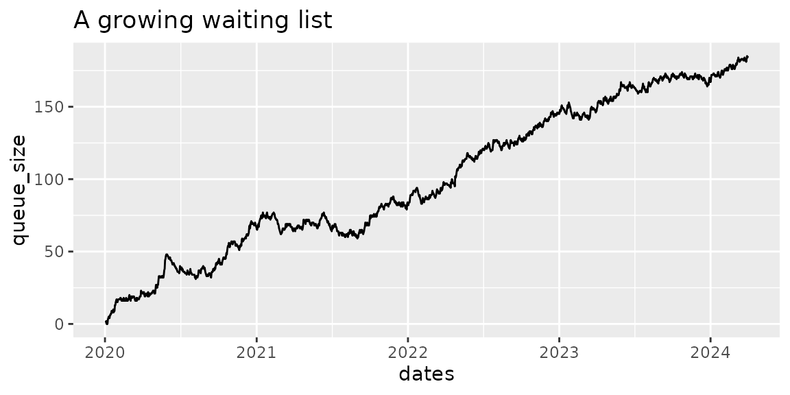
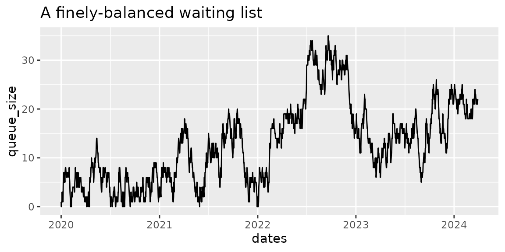
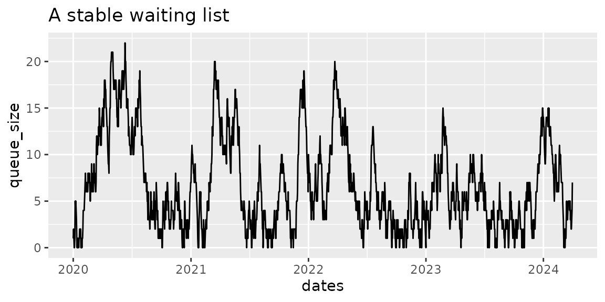

Three example waiting lists
three_example_waiting_lists.Rmd
library(NHSRwaitinglist)
library(ggplot2)
library(dplyr, warn.conflicts = FALSE)
# set a seed so that these plots are always the same
set.seed(2)This vignette is a set of worked examples using a sample dataset
similar to that which you may be working with. It also demonstrates how
to use the wl_* family of functions, such as
wl_simulator, wl_queue_size,
wl_referral_stats, wl_removal_stats, and
wl_stats.
Anatomy of a waiting list
In its purest form, a waiting list consists of the dates that individuals arrived in a queue, and the dates that they left having been seen by the service (doctor, nurse, or diagnostic test, and so on). These dates are the waiting list additions (or arrivals, referrals), and waiting list removals (or treatments, discharges). They correspond to demand (for arrivals), and capacity (for removals).
This vignette is going to simulate 3 different waiting lists:
1. A growing waiting list
So first we need a waiting list, and we can make a synthetic one
using the wl_simulator() function. We decide how long our
simulation should run for, and what our weekly demand and capacity is.
In the example below the capacity is less than the demand, so over time
we should expect a queue to form.
waiting_list <- wl_simulator(
start_date = "2020-01-01",
end_date = "2024-03-31",
demand = 10, # simulating 10 patient arrivals per week
capacity = 9 # simulating 9 patients being treated per week
)
head(waiting_list, 10)
#> Referral Removal
#> 1 2020-01-02 2020-01-03
#> 2 2020-01-03 2020-01-04
#> 3 2020-01-04 2020-01-05
#> 4 2020-01-04 2020-01-05
#> 5 2020-01-06 2020-01-07
#> 6 2020-01-08 2020-01-09
#> 7 2020-01-08 2020-01-10
#> 8 2020-01-08 2020-01-11
#> 9 2020-01-09 2020-01-12
#> 10 2020-01-09 2020-01-12Now that we have a waiting list, we should visualise it. We can use
the wl_queue_size() function to tell us the size of the
queue at the end of each day. We can use {ggplot} to make a plot of the
queue size over time, and as expected, it gets larger and larger because
our demand is bigger than our capacity.
# calculate the queue size
queue_size <- wl_queue_size(waiting_list)
head(queue_size)
#> dates queue_size
#> 1 2020-01-02 1
#> 2 2020-01-03 1
#> 3 2020-01-04 2
#> 4 2020-01-05 0
#> 5 2020-01-06 1
#> 6 2020-01-07 0
tail(queue_size)
#> dates queue_size
#> 1546 2024-03-26 182
#> 1547 2024-03-27 181
#> 1548 2024-03-28 183
#> 1549 2024-03-29 185
#> 1550 2024-03-30 184
#> 1551 2024-03-31 185
# visualise the queue with a plot
ggplot(queue_size, aes(dates, queue_size)) +
geom_line() +
labs(
title = "A growing waiting list"
)
Referral statistics
Next, we might be interested in some statistics about the referrals,
or arrivals, to the queue. We can use the
wl_referral_stats() function to calculate these.
referral_stats <- wl_referral_stats(waiting_list)
head(referral_stats)
#> demand_weekly demand_daily demand_cov demand_count
#> 1 9.818065 1.402581 1.131775 2174Now we can see that 2174 patients joined our simulated waiting list,
at an average rate of 9.82 per week, or 1.4 per day. Very close to the
10 patients a week we requested when we made our simulated waiting list
using wl_simulator(). The final statistic of interest is
the coefficient of variation, which is 1.13.
Removal statistics
Similarly, we might be interested in some statistics about the
removals from the queue. We can use the wl_removal_stats()
function to calculate these.
removal_stats <- wl_removal_stats(waiting_list)
head(removal_stats)
#> capacity_weekly capacity_daily capacity_cov removal_count
#> 1 9.001294 1.285899 0.5363836 1988Now we can see that 1988 patients were treated and removed from our
simulated waiting list, at an average rate of 9 per week, or 1.29 per
day. Very close to the 9 patients a week we set up using
wl_simulator(). The final statistic of interest is the
coefficient of variation (for removals), which is 0.54.
Overall stats
Finally, we can calculate a combined set of statistics to summarise the waiting list. To do this we need to provide the target waiting time. This might be 2 weeks for a cancer referral, or commonly 18 weeks for a standard non-cancer referral.
overall_stats <- wl_stats(
waiting_list = waiting_list,
target_wait = 18 # standard NHS 18 weeks target
)
head(overall_stats)
#> mean_demand mean_capacity load load_too_big count_demand queue_size
#> 1 9.818065 9.001294 1.090739 TRUE 2174 185
#> target_queue_size queue_too_big mean_wait cv_arrival cv_removal
#> 1 44.18129 TRUE 64.63784 1.131775 0.5363836
#> target_capacity relief_capacity pressure
#> 1 NA 15.23417 7.181982This gives us a lot of useful information. Taking it step by step:
The first 4 columns tell us whether the load is larger than 1. If it is, we can expect the queue to continue growing indefinitely.
| mean_demand | mean_capacity | load | load_too_big |
|---|---|---|---|
| 9.818065 | 9.001294 | 1.090739 | TRUE |
The next columns tell us about the resulting queue size at the end of our simulation, the target size we need to plan for in order to achieve the 18 week waiting target, and a judgement about whether the queue is too large. If the queue is too large, we need to implement some relief capacity to bring it within range before attempting to maintain the queue.
| queue_size | target_queue_size | queue_too_big | mean_wait |
|---|---|---|---|
| 185 | 44.18129 | TRUE | 64.63784 |
There is a column to report the actual average patient waiting time, which is 64.64 weeks, compared to our target of 18 weeks.
| mean_wait |
|---|
| 64.63784 |
These two columns re-state the coefficients of variance for use in reporting.
| cv_arrival | cv_removal |
|---|---|
| 1.131775 | 0.5363836 |
The next two columns tell us about the required capacity. Only one will contain data.
- If the queue is not too large,
"target_capacity"will report the capacity required to maintain the queue at it’s target waiting time performance. - If the queue is too large,
"relief_capacity"will report the capacity required to bring the queue to a maintainable size within 26 weeks (6 months).
| target_capacity | relief_capacity |
|---|---|
| NA | 15.23417 |
The final column reports the waiting list "pressure".
This will be useful later when comparing waiting lists of differing
sizes, with differing targets. It allows waiting list pressures to be
compared because the waiting list with the largest number of patients
waiting is not always the list with the largest problem meeting its
target.
| pressure |
|---|
| 7.181982 |
2. A finely balanced waiting list
The waiting list in this section is very finely balanced. The demand
remains the same as the last example, but now capacity has been
increased to be slightly larger than demand. It is not significantly
larger (there is approximately 2% "spare").
waiting_list <- wl_simulator(
start_date = "2020-01-01",
end_date = "2024-03-31",
demand = 10, # simulating 10 patient arrivals per week
capacity = 10.2 # simulating 10.2 patients being treated per week
)
referral_stats <- wl_referral_stats(waiting_list)
head(referral_stats)
#> demand_weekly demand_daily demand_cov demand_count
#> 1 10.10458 1.443512 1.153809 2236
removal_stats <- wl_removal_stats(waiting_list)
head(removal_stats)
#> capacity_weekly capacity_daily capacity_cov removal_count
#> 1 10.12941 1.447059 0.6896719 2214
# calculate the queue size
queue_size <- wl_queue_size(waiting_list)This time we processed 2214 patients.
The increase in capacity not only allowed processing more patients, it also changed the shape of the queue. Visualising the queue we can see that this time it did not grow uncontrollably, reaching a maximum size of 35 patients waiting over the same time period as the first simulation. It also returned to zero length several times during the simulated period.
# visualise the queue with a plot
ggplot(queue_size, aes(dates, queue_size)) +
geom_line() +
labs(
title = "A finely-balanced waiting list"
)
This time we will go straight to calculating the overall statistics.
overall_stats <- wl_stats(
waiting_list = waiting_list,
target_wait = 18 # standard NHS 18wk target
)
head(overall_stats)
#> mean_demand mean_capacity load load_too_big count_demand queue_size
#> 1 10.10458 10.12941 0.9975489 FALSE 2236 22
#> target_queue_size queue_too_big mean_wait cv_arrival cv_removal
#> 1 45.47063 FALSE 6.863636 1.153809 0.6896719
#> target_capacity relief_capacity pressure
#> 1 10.30535 NA 0.7626263In this finely balanced example, the mean demand and mean capacity give a load very close to 1, at 0.9975. While this is less than one, it is perhaps a little too close for comfort.
We can see that the finishing queue size is 22, but as discussed above, the waiting list fluctuated in size, and even returned to zero a couple of times during the simulated period. It has not grown uncontrollably as in the first example.
The mean wait is 6.86, which is less than the target of 18 weeks, but is more than a quarter of the target. The exponential shape of waiting list distributions means that in this system we would expect more than a reasonable number of patients to be experiencing waiting times of over 18 weeks.
This time, we do not need relief capacity because the queue is not
too big. Instead, the package recommends a
"target capacity", which we need to provide if we want to
meet the 18 week standard for the right proportion of patients. In this
case it is 10.305, which is only very marginally larger than the mean
capacity we have available (10.129).
3. A waiting list with sufficient capacity
The final example is for a waiting list with sufficient capacity to meet demand. We’ll use the recommended figure from the example above, assuming we have made some improvements and increased available capacity from 10.2 to 10.3 patients per week.
waiting_list <- wl_simulator(
start_date = "2020-01-01",
end_date = "2024-03-31",
demand = 10, # simulating 10 patient arrivals per week
capacity = 10.3 # simulating 10.3 patients being treated per week
)
referral_stats <- wl_referral_stats(waiting_list)
head(referral_stats)
#> demand_weekly demand_daily demand_cov demand_count
#> 1 9.698904 1.385558 1.173034 2149
removal_stats <- wl_removal_stats(waiting_list)
head(removal_stats)
#> capacity_weekly capacity_daily capacity_cov removal_count
#> 1 10.14005 1.448579 0.7247564 2141
# calculate the queue size
queue_size <- wl_queue_size(waiting_list)This time we processed 2141 patients.
Visualising the queue, again it looks different to the previous
examples. While the maximum number of patients in the queue is similar
to the last example, this time the queue size has frequently dropped to
zero. This is a stable queue, which is able to empty more regularly.
NOTE When the queue is empty, the process serving it will also be idle. Conventional wisdom has it that at this point the process must have excess capacity, which can safely be removed. This is not the case. Returning to “Fact 2” of Professor Neil Walton’s white paper,
If you want to have low waiting times, then there must be a non-negligible fraction of time where services are not being used.
# visualise the queue with a plot
ggplot(queue_size, aes(dates, queue_size)) +
geom_line() +
labs(
title = "A stable waiting list"
)
Again calculating the overall statistics.
overall_stats <- wl_stats(
waiting_list = waiting_list,
target_wait = 18 # standard NHS 18 weeks target
)
head(overall_stats)
#> mean_demand mean_capacity load load_too_big count_demand queue_size
#> 1 9.698904 10.14005 0.9564943 FALSE 2149 7
#> target_queue_size queue_too_big mean_wait cv_arrival cv_removal
#> 1 43.64507 FALSE 0.8571429 1.173034 0.7247564
#> target_capacity relief_capacity pressure
#> 1 9.910157 NA 0.0952381This time the simulation has created a mean demand and capacity which is slightly lower than we asked for, but the gap between them is similar to what we wanted.
The load comes out at 0.956, which is more comfortably below one. A still lower load would give more headroom, and may even become necessary if the variability of demand or capacity were to increase.
The mean wait is 0.86, less than a week, which is very comfortably less than the target of 18 weeks. In this system we expect the 18 weeks target to be met for the vast majority of patients.
Again, the package is recommending a "target capacity",
this time of 9.91, which is a similar margin above the mean demand for
this simulation (9.699).